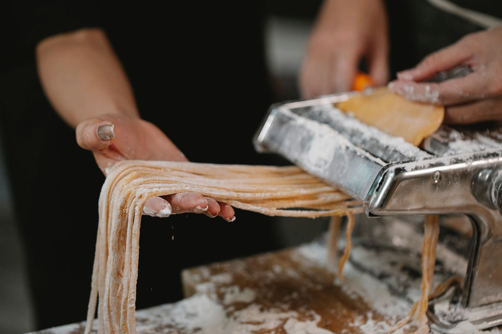
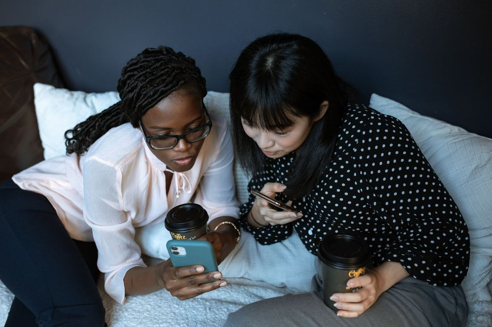
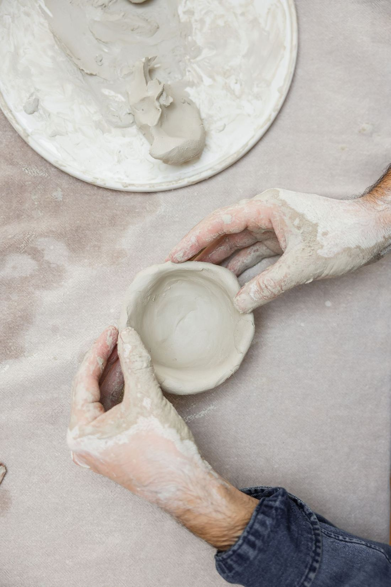
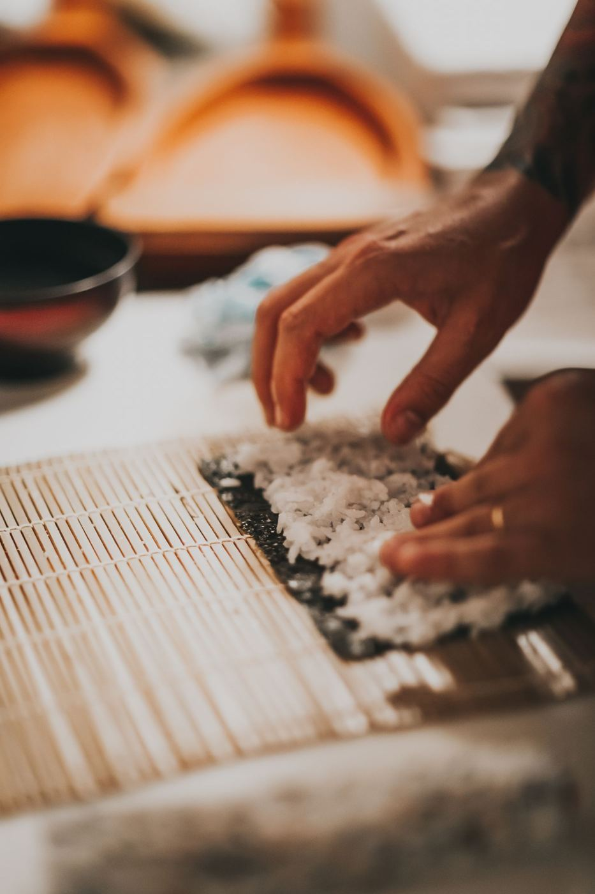
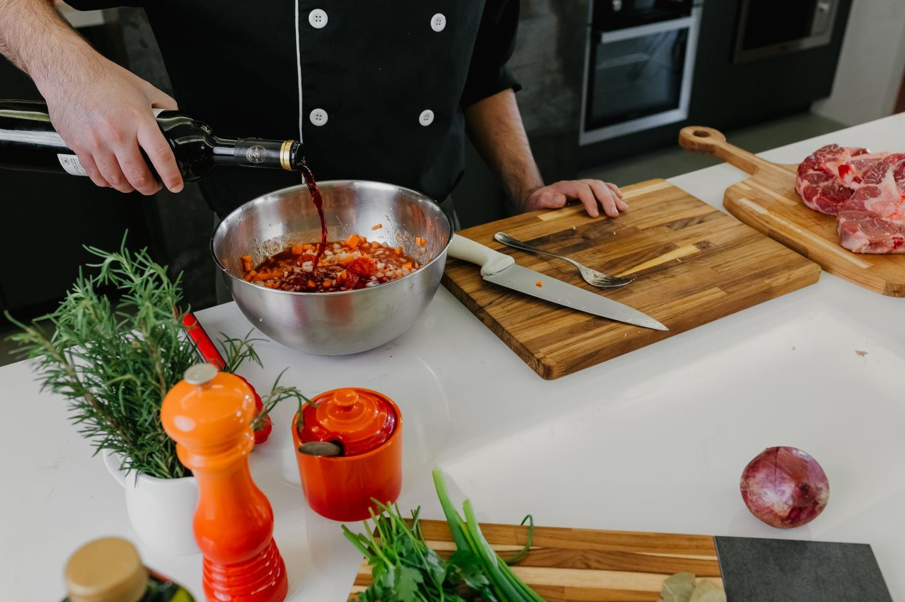
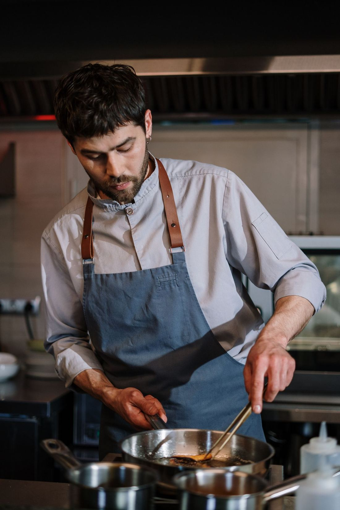
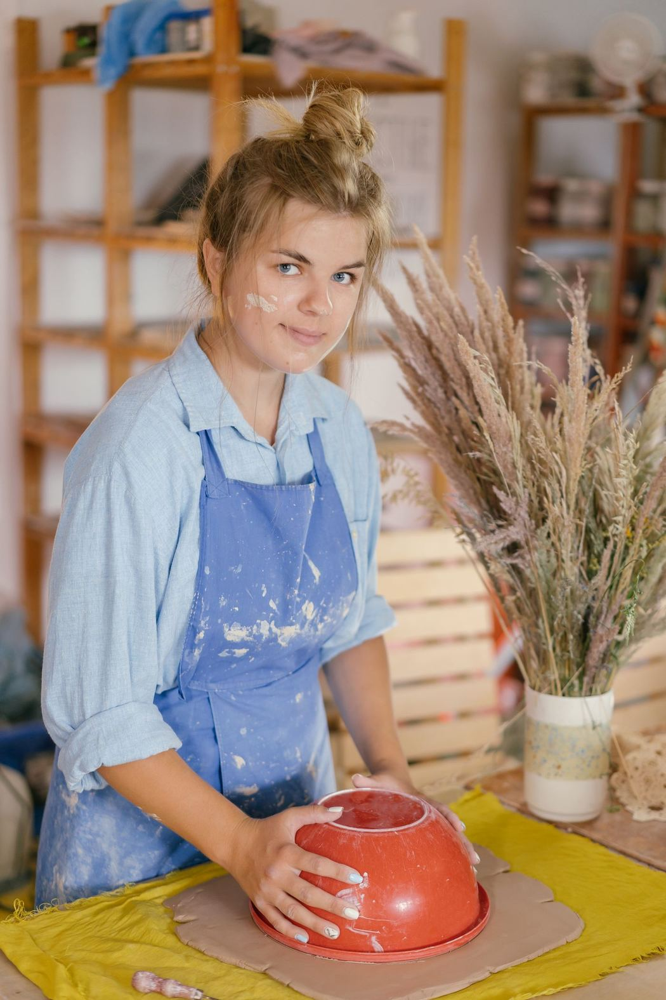
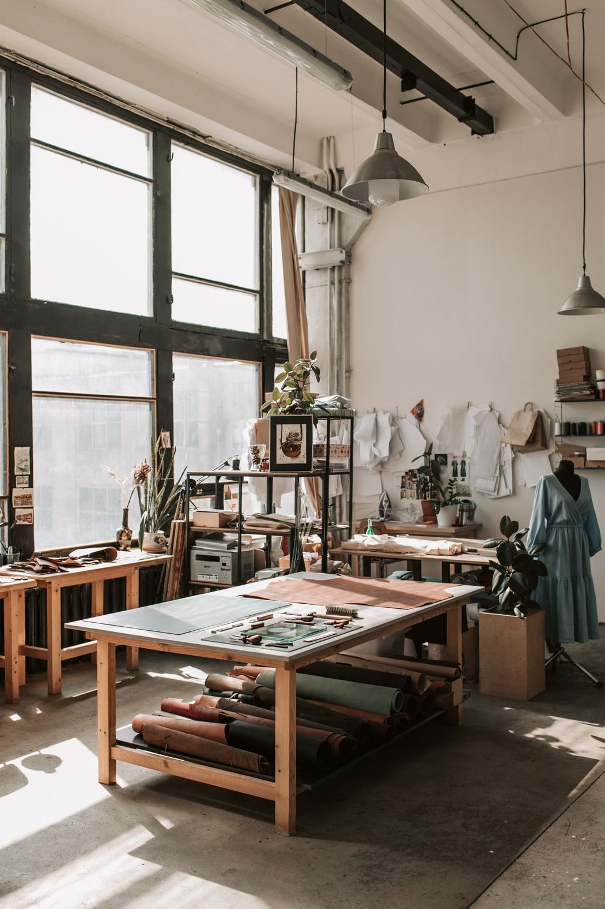
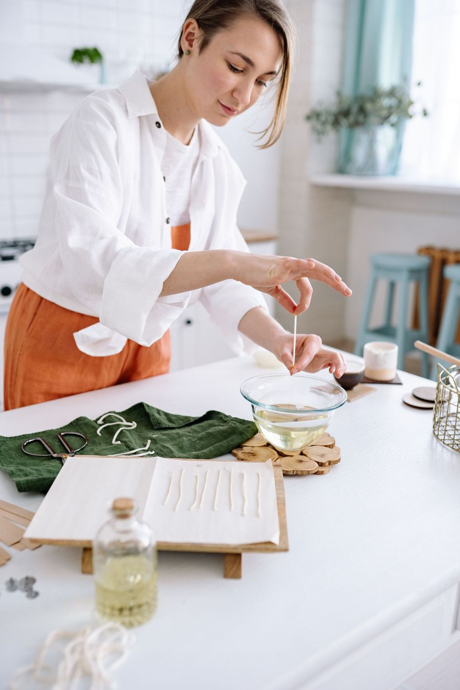

Scherm 1 van 9 Sanne heeft zich zonder account aangemeld voor Luca. Dit is de bevestiging op de site, met het account ernaast.
Je plek staat vast
Je bent aangemeld voor za 21 nov bij Luca
De bevestiging staat ook in je mail, met een link om je aanmelding terug te zien. Daar heb je geen account voor nodig.

Workshop
Italiaans koken met Luca: verse pasta
Wanneer
za 21 nov, 15:00 tot 18:00
Waar
Wittevrouwen, Utrecht. Het adres staat in je mail.
Met
1 persoon
1 van 4 nodigIs het minimum er uiterlijk vr 20 nov, 22:00, dan gaat de middag door. Je krijgt een herinnering vóór het beslismoment.
Annotatie: Google en Apple staan er als voorbeeld; welke aanbieders er komen, is nog niet gekozen. Heeft Sanne bij Google of Apple een ander e-mailadres dan bij haar aanmelding, dan hangt de aanmelding er niet vanzelf aan. Hoe ze hem dan koppelt, is een uitwerkpunt voor Rick (in concept C staat een voorstel).
Workshop, aanbieder, datum en e-mailadres zijn voorbeelddata
Scherm 2 van 9 Na “Maak mijn account”: de site vraagt haar het e-mailadres te bevestigen, en de mail komt binnen.
Bijna klaar: bevestig je e-mailadres
We hebben een mail gestuurd naar sanne@voorbeeld.nl. Klik op de knop in die mail, dan staat je account klaar met je aanmelding erin.
Je account is bijna klaar. Klik op de knop om te laten zien dat dit jouw e-mailadres is. Daarna zie je je aanmelding voor za 21 nov bij Luca in je account.
Heb je geen account gemaakt? Dan kun je deze mail negeren.
Annotatie: eerst bevestigen, dan pas binnen. Zo ziet niemand die jouw e-mailadres intypt jouw aanmeldingen. Rick kan er ook voor kiezen Sanne meteen binnen te laten en het bevestigen later te vragen; dat is sneller, maar dan blijven de aanmeldingen tot de bevestiging verborgen.
Scherm 3 van 9 De andere route: de bevestigingsmail van haar aanmelding, met onderaan een knop voor een account.
Wie op de knop in deze mail klikt, laat daarmee zien dat het adres klopt. Sanne hoeft dus alleen nog een wachtwoord te kiezen, of ze kiest Google of Apple.
Workshop, datum en e-mailadres zijn voorbeelddata
Scherm 4 van 9 Na de knop in de bevestigingsmail: alleen nog een wachtwoord kiezen.
Dit staat straks in je account
za 21 nov, 15:00Italiaans koken met Luca1 van 4 nodig
Ook latere aanmeldingen met sanne@voorbeeld.nl komen er vanzelf bij.
Scherm 5 van 9 De eerste keer binnen. Dit is het eerste scherm van Mijn account; dat is uitgewerkt bij Deelnemer: mijn account.
Je account staat klaar
Welkom, Sanne. Je aanmelding staat erin.
Hier zie je voortaan je aanmeldingen met de stand van elke datum. Je kunt een datum delen, verzetten of annuleren, en na afloop een review schrijven.
Scherm 6 van 9 Een account maken zonder boeking, via Inloggen in de menubalk en dan “Maak een account”.

Wat je aan een account hebt
Al je aanmeldingen op één plek, met de stand van elke datum
Workshops bewaren en workshopgevers volgen
Na afloop een review schrijven
Boeken kan ook zonder account.
Annotatie: we vragen geen geboortedatum, adres of telefoonnummer. De voornaam mag leeg; dan vullen we hem in bij de eerste aanmelding.
Scherm 7 van 9 Als ze terugkomt: inloggen, en wat ze ziet als het niet klopt.
Annotatie: de foutmelding zegt niet of het e-mailadres bij ons bekend is, zodat niemand kan uitproberen wie er een account heeft. Inlogscherm uit ronde 1: elk van de drie past, ze vragen alle drie e-mail en wachtwoord, met Google en Apple als voorbeeld.
Scherm 8 van 9 Wachtwoord vergeten: e-mailadres invullen, de mail, en een nieuw wachtwoord kiezen.
Wicked Workshopsaan sanne@voorbeeld.nl
Kies een nieuw wachtwoord
Hoi Sanne, met deze knop kies je een nieuw wachtwoord. De link werkt één keer.
Nieuwe link aangevraagdDe oude link doet niets meer.
Mail met een nieuwe linkDezelfde mail als in scherm 2 of 8.
KlaarJe e-mailadres is bevestigd of je kiest je nieuwe wachtwoord, en je bent binnen.
Annotatie: hoe lang een link werkt, is nog niet bepaald; daarom staat er geen termijn in de tekst. Voorstel voor Rick: een link werkt één keer, en een link voor een nieuw wachtwoord korter dan een bevestigingslink.
Ook van makers zonder bedrijf.Geen btw-nummer nodig om te beginnen.
Inloggen met een link in je mail, zonder wachtwoord
Je vult je e-mailadres in en klikt op de link die we sturen. Er is niets om te onthouden of te vergeten. Hieronder vier routes, scherm voor scherm, met de site en je mailbox om en om.
Annotatie: Google en Apple staan er als voorbeeld; welke aanbieders er komen, is nog niet gekozen. Inlogscherm uit ronde 1: de drie vragen een wachtwoord, met Google en Apple als voorbeeld. Voor dit concept komt er een inloglink per mail in de plaats van het wachtwoord; Google en Apple blijven.
Route 1 van 4 Sanne heeft zich zonder account aangemeld voor Luca. Op de bevestiging maakt ze met één klik een account.
Na je boeking, op de site
1Op de site: de bevestiging
Wicked Workshops
Je plek staat vast
Je bent aangemeld voor za 21 nov bij Luca
za 21 nov, 15:00 tot 18:00Wittevrouwen, Utrecht · 1 persoon
1 van 4 nodigbeslismoment vr 20 nov, 22:00
Je aanmelding later terugzien?
Een account kost je één klik. We sturen een link naar sanne@voorbeeld.nl.
Annotatie: stap 4 is het eerste scherm van Deelnemer: mijn account; daar is het helemaal uitgewerkt. Met Google of Apple slaat Sanne stap 2 en 3 over, als het e-mailadres hetzelfde is als bij haar aanmelding.
Workshop, datum en e-mailadres zijn voorbeelddata
Route 2 van 4 Sanne maakte op de site geen account. In de bevestigingsmail staat de knop nog een keer, en die knop is het hele account.
Na je boeking, vanuit de mail
1In je mailbox: de bevestiging
Inbox
Wicked Workshopsaan sanne@voorbeeld.nl · 14:05
Je bent aangemeld: za 21 nov bij Luca
za 21 nov, 15:00 tot 18:00[adres van Luca], Wittevrouwen
Er is geen formulier en geen wachtwoord. De knop in de mail bewijst dat het adres van Sanne is, en haar aanmelding hangt aan datzelfde adres.
Annotatie: stuurt iemand deze mail door, dan kan de ontvanger met de knop ook het account maken. Voorstel voor Rick: de knop werkt één keer, en daarna logt Sanne in zoals in route 3. Dat moet hij afwegen tegen het gemak.
Route 3 van 4 Inloggen als je terugkomt en een account maken zonder boeking gaan via hetzelfde scherm. Hier komt Sanne diezelfde maandag, ma 9 nov, in de avond terug.
Annotatie: is het e-mailadres nieuw, dan heet de mail “Welkom bij Wicked Workshops” en vraagt het eerste scherm binnen alleen of we je voornaam mogen weten (mag leeg). Een nieuw account zonder aanmeldingen landt op de lege staat; die staat bij Deelnemer: mijn account, concept C. De code in stap 2 en 3 is een voorstel voor wie de mail op zijn telefoon leest en op de laptop inlogt; Rick beslist of hij erbij komt.
Route 4 van 4 Twee schermen voor als het misgaat: een link die niet meer werkt, en een mail die niet komt. Een wachtwoord om te vergeten is er niet.
Als de link niet werkt
Een oude of al gebruikte link
Wicked Workshops
De mail komt niet
Wicked Workshops
Geen mail gekregen?
Kijk in je spam of bij reclame.
Klopt het adres? We stuurden hem naar sanne@voorbeeld.nl. Aanpassen
Heb je bij ons ingelogd met Google of Apple? Gebruik dan die knop.
Zonder wachtwoord is er ook geen “wachtwoord vergeten”. Wie niet binnenkomt, vraagt gewoon een nieuwe link.
Annotatie: hoe lang een link werkt, is nog niet bepaald; daarom staat er geen termijn in de tekst. Kwijt kan Sanne alleen haar mailbox raken. Wat er dan gebeurt (een ander e-mailadres koppelen via het team?), is een punt voor Rick en Geeta.
Ook van makers zonder bedrijf.Geen btw-nummer nodig om te beginnen.
Inloggen zoals jij wilt, en daarna verder waar je was
Met een link in je mail of met een wachtwoord: allebei goed, en je kunt per keer kiezen. Inloggen gebeurt in een venster over de pagina waar je bent. Sluit het venster en je staat weer op dezelfde plek.
Annotatie: Google en Apple staan er als voorbeeld; welke aanbieders er komen, is nog niet gekozen. Inlogscherm uit ronde 1: de drie vragen een wachtwoord en hebben Google en Apple als voorbeeld. Voor dit concept komt er een inloglink per mail bij.
Spoor 1 van 3: nieuw Sanne heeft zich zonder account aangemeld voor Luca, of ze komt voor het eerst langs.
Venster 1 Na je boeking
Je bent op: je bevestiging
Je plek staat vast
Bewaar je aanmelding in een account
Je aanmelding voor za 21 nov bij Luca hangt er meteen aan. Kies hoe je inlogt:
Annotatie: na venster 3 gaat het verder bij Deelnemer: mijn account, concept C. De vraag naar een wachtwoord komt één keer; daarna staat de keuze bij je gegevens.
Workshops, datum en e-mailadres zijn voorbeelddata
Spoor 2 van 3: terug Een week later wil Sanne vanaf een workshoppagina inloggen. Ze heeft een wachtwoord ingesteld, maar hoeft het niet te gebruiken.
Venster 4 E-mailadres invullen
Je bent op: Dumplings vouwen en stomen
Venster 5 Jouw manier
Je bent op: Dumplings vouwen en stomen
Venster 6 In je mailbox
Wicked Workshopsaan sanne@voorbeeld.nl
Je link om in te loggen
Hoi Sanne, klik op de knop en je bent ingelogd. Je komt terug op de pagina waar je was: Dumplings vouwen en stomen.
Niet zelf aangevraagd? Dan hoef je niets te doen; zonder deze knop komt niemand binnen.
Annotatie: eerst alleen het e-mailadres, dan pas de keuze. Wie geen wachtwoord heeft, ziet in venster 5 alleen de knop voor een link. Dat verraadt wel of een adres een account heeft; Rick weegt af of dat mag, of dat venster 5 altijd beide opties toont.
Spoor 3 van 3: als het misgaat Een vergeten wachtwoord, een oude link, of een Google-account op een ander adres dan de aanmelding.
Venster 7 Wachtwoord vergeten
Je bent op: Dumplings vouwen en stomen
Geen probleem, je komt toch binnen
We sturen een mail naar sanne@voorbeeld.nl. Kies wat erin staat:
Geen wachtwoord ingesteld? Dan is de nieuwe link de snelste weg.
Venster 9 Ander e-mailadres
Je bent op: Mijn account
Mis je een aanmelding?
Je bent ingelogd met Google als sanne.prive@voorbeeld.nl. Heb je je aangemeld met een ander adres, dan staat die aanmelding hier nog niet.
We sturen een link naar dat adres. Klik je erop, dan staan je aanmeldingen in dit account.
Annotatie: venster 9 is een voorstel voor Rick. Bij Apple kan Sanne haar adres verbergen; dan krijgt Wicked Workshops een doorstuuradres en hangt een aanmelding er nooit vanzelf aan. Hoe lang een link werkt, is nog niet bepaald; daarom staat er geen termijn in de tekst.
Workshops en e-mailadressen zijn voorbeelddata
Ook van makers zonder bedrijf.Geen btw-nummer nodig om te beginnen.
Staan er vr 20 nov om 22:00 vier aanmeldingen, dan gaat de middag door, en dat blijft zo. Zo niet, dan krijg je een andere datum aangeboden. Je krijgt een herinnering vóór het beslismoment.
Haal er zelf iemand bij
Met jouw link ziet je vriend of collega meteen deze datum en de stand.
Ik ga za 21 nov pasta maken bij Luca. Er zijn nog 3 aanmeldingen nodig, doe je mee? [link naar deze datum]
Annotatie: een allergie of dieetwens kan een gezondheidsgegeven zijn. Of Sanne hem hier zelf mag aanpassen, en hoe lang de workshopgever hem ziet, is een punt voor Geeta. Een berichtenfunctie is er niet: de wens gaat als veld mee naar Luca.
Scherm 3 van 8 Na “Verzetten” of “Annuleren”: de andere datums van Luca, en annuleren ernaast.
Annotatie: hoe de andere datum gekozen wordt (Luca kiest, of de eerstvolgende datum met plek) en wat er gebeurt als Sanne niet reageert, is nog niet beslist. Rick werkt dat uit; het scherm laat alleen zien waar het aanbod staat. Een minimale tijd tussen beslismoment en start (48 uur) is een voorstel, geen regel.
Scherm 5 van 8 Eerder: workshops waar je was, met een review schrijven.
Eerder

Handvormen voor beginners
Noor · Oudwijk, Utrecht · za 31 okt
Je review staat nog open
Hier komen alle workshops waar je via Wicked Workshops was. Alleen wie geboekt heeft, kan een review schrijven.
Annotatie: of reviews eerst worden nagekeken voor ze online staan, en of een workshopgever kan reageren, is nog niet beslist. Daarom staat er geen “wordt gecontroleerd” en geen reactie.
Scherm 6 van 8 Bewaard: workshops met een hartje, en workshopgevers die je volgt.
Bewaard

Sushi rollen voor beginners
Lombok, Utrecht · €52 · ★ 4,8 (143)
Gaat doorvr 13 nov, 18:30 · nog 5 plekken

Koken met wijn: ossobuco en risotto
Luca · €49 · ★ 4,8 (26)
2 van 4 nodigvr 4 dec, 18:30
Workshopgevers die je volgt

Luca3 workshops · ★ 4,9 (389)

NoorKeramiek · ★ 4,9 (171)
Zet een nieuwe datum van iemand die je volgt aan of uit bij Meldingen.
Workshops, prijzen en beoordelingen zijn voorbeelddata
Scherm 7 van 8 Meldingen: per soort aan of uit.
Meldingen
Je krijgt meldingen per mail op sanne@voorbeeld.nl.
Deze krijg je altijd
Je bevestiging, of een datum doorgaat of niet doorgaat, en een wijziging door de workshopgever.
Annotatie: welke mails altijd komen omdat ze bij de aanmelding horen, bepaalt Geeta. Het aantal plekken waarbij “bijna vol” telt, ligt nog niet vast.
Scherm 8 van 8 Gegevens: wat we van je weten, downloaden, en je account verwijderen.
Je gegevens, bewaarde workshops en meldingen gaan weg. Dit kun je niet terugdraaien.
Je hebt nog 2 aanmeldingen: di 10 nov en za 21 nov.
Annotatie: wat er met open aanmeldingen gebeurt als Sanne haar account verwijdert (blijven ze staan, of vervallen ze) en wat er van een geplaatste review overblijft, is een punt voor Geeta en Rick. Daarom noemt het scherm de aanmeldingen wel, maar belooft het niets.
Ook van makers zonder bedrijf.Geen btw-nummer nodig om te beginnen.
Annotatie: hoe de aangeboden datum gekozen wordt en wat er gebeurt als Sanne niet reageert, is nog niet beslist; Rick werkt dat uit. Een minimale tijd tussen beslismoment en start (48 uur) is een voorstel, geen regel.
Scherm 3 van 7 Na “Verzetten of annuleren”: een paneel over de pagina, op de telefoon van onderen.
Je aanmelding voor za 21 nov bij Luca
Verzetten, kosteloos
Annuleren
Gratistot do 19 nov, 15:0050 procentdaarna, tot de start
Dit is de basisregeling, die geldt bij de meeste workshops. Tijdens de pilot betaal je niets. Betalen via de site kan op zijn vroegst vanaf januari 2027.
Scherm 4 van 7 Op de telefoon: de knop Menu onderin opent dit paneel. Alles wat op de computer in de tabs staat.
Za 21 nov bij Luca heeft nog 3 aanmeldingen nodig
Het menu op de telefoon
Op de telefoon staat er geen rij tabs bovenin, maar een knop Menu onderaan het scherm. Het paneel schuift van onderen open, met bij elk onderdeel in een paar woorden wat er staat.
Annotatie: de knop blijft onderin staan tijdens het scrollen. Of dat ook geldt op de workshoppagina’s buiten Mijn account, kiest Rick bij het bouwen.
Scherm 5 van 7 Eerder: de review voor Noor, één vraag per keer.
Handvormen voor beginnersNoor · Oudwijk, Utrecht · za 31 okt
Annotatie: alleen wie via Wicked Workshops geboekt heeft, krijgt deze vraag. Of reviews eerst worden nagekeken en of Noor kan reageren, is nog niet beslist; daarom staat er niets over.
Scherm 6 van 7 Bewaard: workshops met een hartje en workshopgevers die je volgt.
Bewaard
Gaat doorvr 13 nov · nog 5 plekken
Sushi rollen voor beginners
Lombok, Utrecht · €52 · ★ 4,8 (143)
2 van 4 nodigvr 4 dec
Koken met wijn: ossobuco en risotto
Luca · €49 · ★ 4,8 (26)
Je volgt
LucaNieuwe datum: ravioli, wo 25 nov
NoorGeen nieuwe datums
Een melding bij een nieuwe datum zet je aan of uit bij Instellingen.
Workshops, prijzen en beoordelingen zijn voorbeelddata
Scherm 7 van 7 Instellingen: meldingen, je gegevens en je account op één pagina.
Instellingen
Meldingen per mail
Je bevestiging en het bericht of een datum doorgaat, krijg je altijd.
Annotatie: wat er met open aanmeldingen gebeurt als Sanne haar account verwijdert, is een punt voor Geeta en Rick. Welke mails altijd komen omdat ze bij de aanmelding horen, bepaalt Geeta.
Ook van makers zonder bedrijf.Geen btw-nummer nodig om te beginnen.
De basisregeling, die geldt bij de meeste workshops. Tijdens de pilot betaal je niets. Betalen via de site kan op zijn vroegst vanaf januari 2027.
Annotatie: een allergie of dieetwens kan een gezondheidsgegeven zijn; hoe lang de workshopgever hem ziet en of Sanne hem achteraf mag wijzigen, is een punt voor Geeta. Het adres staat hier als [adres van Luca]: waar en wanneer het adres zichtbaar wordt, kiest Rick.
Scherm 3 van 7 Stel: vr 20 nov om 22:00 staan er 2 van de 4. Het kaartje krijgt een stempel, en ernaast ligt een nieuw kaartje klaar.
Annotatie: hoe de aangeboden datum gekozen wordt en wat er gebeurt als Sanne niet reageert, is nog niet beslist; Rick werkt dat uit. Een minimale tijd tussen beslismoment en start (48 uur) is een voorstel, geen regel.
Scherm 4 van 7 De lege staat: een nieuw account zonder aanmeldingen, bijvoorbeeld na inloggen met een nieuw e-mailadres.
?
Nog geen kaartjes
Meld je aan voor een workshop, dan staat je kaartje hier, met de stand van de datum erop.
Annotatie: “Koppel je aanmelding” is uitgewerkt bij Deelnemer: inloggen, concept C (venster 9). Het is een voorstel voor Rick.
Scherm 5 van 7 Lager op de pagina: eerder. Een gebruikt kaartje, met de review er meteen op.
Eerder
za31oktgeweest
Handvormen voor beginners
Noor · Oudwijk, Utrecht
Annotatie: alleen een kaartje van een boeking via Wicked Workshops krijgt een review. Of reviews eerst worden nagekeken en of Noor kan reageren, is nog niet beslist; daarom staat er niets over.
Scherm 6 van 7 Lager op de pagina: bewaard. Workshops met een hartje, en workshopgevers die je volgt, met de melding per persoon.
Nieuwe datums van wie je volgt, zet je per persoon aan bij Bewaard. Je bevestiging en of een datum doorgaat, krijg je altijd.
Account verwijderen
Je gegevens, bewaarde workshops en meldingen gaan weg. Dit kun je niet terugdraaien. Je hebt nog 2 kaartjes: di 10 nov en za 21 nov.
Annotatie: wat er met open aanmeldingen gebeurt als Sanne haar account verwijdert, en wat er van een geplaatste review overblijft, is een punt voor Geeta en Rick. Welke mails altijd komen omdat ze bij de aanmelding horen, bepaalt Geeta.
Ook van makers zonder bedrijf.Geen btw-nummer nodig om te beginnen.
Heb jij geen account gemaakt? Dan kun je deze mail negeren.
Wat er in de bevestigingsmail staat
De mail zegt waarom hij komt en wat je moet doen. Geen wachtwoord in de mail, geen bijlage.
Annotatie: hoe lang de bevestigingslink werkt, kiest Rick. Klikt iemand op een verlopen link, dan volgt het scherm “Deze link werkt niet meer” uit scherm 7.
E-mailadres is voorbeelddata
Scherm 4 van 7 Na klikken op de knop in de mail: je bent ingelogd
Account
Bevestigen
Welkom
Welkom bij Wicked Workshops
Twee vragen, dan begin je aan je workshop.
Kies je “ik heb er een nodig”, dan zie je na deze stap eerst de ruimtes op Locatie gezocht. Daar neem je zelf contact op met de eigenaar. Je kunt ook gewoon beginnen en bij “Waar geef je de workshop?” kiezen voor “Ik zoek nog een locatie”.
Annotatie: Locatie gezocht toont ruimtes als advertentie. Wicked Workshops koppelt niet en is geen partij bij huur, sleutel of schoonmaak. Of we het antwoord op deze vraag bewaren om later passende ruimtes te tonen, is aan het team.
Naam is voorbeelddata
Scherm 5 van 7 Na “Verder”: je eerste stappen, en door naar de wizard
Hoi Lotte, zo zet je je eerste workshop online
Je hoeft niets in één keer af te maken. Alles wat je invult, bewaren we als concept.
Je workshop opstellenZes stappen: basis, inhoud, praktisch, beeld, prijs en datums.
Je aanbiedersverklaringPas als je workshop klaarstaat: wie je bent, of je particulier of ondernemer bent, en waar je voor tekent.
De check door ons teamOns team bekijkt elke workshop voordat hij online gaat, met of zonder bedrijf.
OnlineDeelnemers zien je datums en melden zich direct aan.
Annotatie: Inlogscherm uit ronde 1: elk van de drie past, ze vragen alle drie e-mail en wachtwoord, met Google en Apple als voorbeeld. Inloggen vanaf het dashboard van een workshopgever en vanaf een deelnemersaccount gaat via hetzelfde scherm.
Workshop en e-mailadres zijn voorbeelddata
Scherm 7 van 7 Wachtwoord vergeten, van aanvraag tot nieuw wachtwoord
Wachtwoord vergeten
Onderwerp
Kies een nieuw wachtwoord
Hoi Lotte, met de knop hieronder kies je een nieuw wachtwoord. Heb je dit niet zelf gevraagd, dan blijft je wachtwoord gewoon hetzelfde.
Scherm 1 van 9 Na klikken op “Begin met je e-mailadres” op Word workshopgever
Word workshopgever
Geen wachtwoord nodig. We sturen je een link waarmee je inlogt.
of
Een bedrijf heb je niet nodig. Voordat je workshop online gaat, kijkt ons team mee.
Workshops geven begint met alleen je e-mailadres
Je typt je e-mailadres en krijgt een mail met een knop. Wie op die knop tikt, is ingelogd. Er is geen wachtwoord om te verzinnen of te vergeten.
We vragen nu
Alleen je e-mailadres
Een bedrijf
Niet nodig, wel een check door ons team
Je gegevens
Pas in je aanbiedersverklaring, als je workshop klaarstaat
Annotatie: Google en Apple staan er als voorbeeld; welke inlogaanbieders er komen, is nog niet gekozen. Dit concept werkt zonder wachtwoord, met een inloglink per mail.
Scherm 2 en 3 van 9 Na “Stuur me een link”: de site wacht, en de mail komt binnen
Check je mail
We hebben een link gestuurd naar lotte@voorbeeld.nl. Tik op de knop in de mail om in te loggen.
De link werkt één keer. Heb jij hier niet om gevraagd? Dan kun je deze mail negeren.
De mail is de sleutel
Zodra Lotte op de knop tikt, is haar e-mailadres bevestigd en is ze ingelogd. Een aparte bevestigingsmail is niet nodig.
Annotatie: hoe lang een link werkt, kiest Rick (voorstel: kort, en één keer te gebruiken). Begin je op je computer en open je de mail op je telefoon, dan ben je op je telefoon ingelogd. Voorstel voor Rick: zet in de mail ook een korte code die je op het eerste apparaat kunt intypen.
E-mailadres is voorbeelddata
Scherm 4 en 5 van 9 Na tikken op de link: je bent binnen, twee vragen
Vraag 1 van 2
Hoe mogen we je noemen?
Je volledige naam vragen we pas in je aanbiedersverklaring.
Vraag 2 van 2
Heb je zelf een plek voor je workshop, Lotte?
Hoe je antwoordt
De antwoorden zijn grote vlakken: tikken is genoeg. Wie “Nee, ik heb er een nodig” kiest, ziet eerst Locatie gezocht (scherm 6). Wie een plek heeft, gaat meteen door naar scherm 7.
Annotatie: of we dit antwoord bewaren om later passende ruimtes te tonen, is aan het team.
Naam is voorbeelddata
Scherm 6 van 9 Als je “Nee, ik heb er een nodig” kiest

Kijk eerst wat er leeg staat
Op Locatie gezocht zetten eigenaren hun keuken, atelier of zaal neer, met wat er is en welke dagdelen vrij zijn. Je neemt zelf contact op met de eigenaar.
Locatie gezocht is een eigen deel van de site. Wie liever eerst zijn workshop opstelt, kiest in de wizard bij “Waar geef je de workshop?” voor “Ik zoek nog een locatie” en zoekt later.
Annotatie: ruimtes zijn advertenties. Huur, sleutel en schoonmaak regelen workshopgever en eigenaar rechtstreeks; Wicked Workshops koppelt niet en is daar geen partij in.
Scherm 7 van 9 Je eerste stappen, en door naar de wizard
Klaar om te beginnen, Lotte
Je workshop opstellenZes stappen, tussendoor bewaard als concept
Je aanbiedersverklaringAls je workshop klaarstaat
Check door ons teamVoor elke workshop, met of zonder bedrijf
Lotte geeft haar workshop thuis, zonder bedrijf. In haar verklaring kiest ze straks “particulier”, en deelnemers lezen bij haar workshop: “Aangeboden door een particulier. Het consumentenrecht geldt niet.” Werktekst
Tijdens de pilot betaal je niets. Betalen via de site kan op zijn vroegst vanaf januari 2027.
Annotatie: de tekst bij een particulier werken Geeta en de jurist uit.
Naam is voorbeelddata
Scherm 8 en 9 van 9 Als je terugkomt, en als een link niet meer werkt
Log in
Vul je e-mailadres in, dan sturen we je een link.
of
Deze link werkt niet meer
Hij is al gebruikt of te oud. Geen probleem: we sturen je een nieuwe naar lotte@voorbeeld.nl.
Zonder wachtwoord valt er niets te vergeten. Wat wel kan: een link die te oud is, of een mail die niet aankomt. Beide los je op met een nieuwe link, op dezelfde plek.
Kun je niet meer bij je e-mailadres? Dan helpt ons team via [e-mailadres volgt].
Annotatie: Inlogscherm uit ronde 1: de drie vragen een wachtwoord, met Google en Apple als voorbeeld. Voor dit concept komt er een inloglink per mail in de plaats van het wachtwoord; Google en Apple blijven. Na het inloggen kom je op je dashboard, of terug in je concept als je daarmee bezig was.
E-mailadres is voorbeelddata
Ook van makers zonder bedrijf.Geen btw-nummer nodig om te beginnen.
Scherm 1 van 7 Na klikken op “Begin met je e-mailadres” op Word workshopgever
Word workshopgever. Jij kiest hoe je inlogt.
Je e-mailadres is genoeg om te beginnen. Daarna kies je: elke keer een link in je mail, of een eigen wachtwoord. Een bedrijf heb je niet nodig.
Annotatie: het wachtwoordveld verschijnt pas als je “Met een wachtwoord” kiest; hier staat het open zodat je het ziet. Google en Apple staan er als voorbeeld; welke inlogaanbieders er komen, is nog niet gekozen.

Thuis aan de keukentafel kan ook. Of je particulier of ondernemer bent, geef je later aan.
Scherm 2 van 7 De mail die binnenkomt, voor elke keuze een eigen versie
Van
Wicked Workshops
Aan
lotte@voorbeeld.nl
Onderwerp
Je link om verder te gaan
Je link om verder te gaan
Hoi,
Met deze knop log je in en is je e-mailadres meteen bevestigd. Daarna zie je je startlijst.
Heb jij geen account gemaakt? Dan kun je deze mail negeren.
Links: wie koos voor een link. Eén mail doet twee dingen: inloggen en bevestigen. Rechts: wie een wachtwoord koos. Die bevestigt alleen nog het adres en is daarna gewoon ingelogd.
Annotatie: hoe lang een link werkt, kiest Rick (voorstel: kort, en één keer te gebruiken). Een verlopen link geeft het scherm uit scherm 6.
E-mailadres is voorbeelddata
Scherm 3 van 7 Na de knop in de mail: je startlijst, met de eerste vraag open
Welkom bij Wicked Workshops
Dit is je startlijst. Hij onthoudt waar je bent, ook als je tussendoor stopt.
Account gemaaktlotte@voorbeeld.nl, inloggen met een link
Even kennismakenTwee vragen, dan kun je beginnen
Stel je workshop opKaart, pagina en datums. Tussendoor bewaard als concept.
Je aanbiedersverklaringPas als je workshop klaarstaat: wie je bent, particulier of ondernemer
Check door ons teamVoor elke workshop, met of zonder bedrijf
OnlineDeelnemers boeken direct, zonder dat jij hoeft goed te keuren
Annotatie: de tekst bij een particulier werken Geeta en de jurist uit. Of we het antwoord over je plek bewaren om later passende ruimtes te tonen, is aan het team.
Naam en e-mailadres zijn voorbeelddata
Scherm 4 van 7 Na “Nee, ik zoek nog een plek”: de lijst krijgt er een regel bij
Stel je workshop opJe begint met hoe je kaart eruitziet in de zoekresultaten. Tussendoor bewaard als concept.
Begin met je kaart
Je aanbiedersverklaring
Check door ons team
Online
Annotatie: ruimtes op Locatie gezocht zijn advertenties. Huur, sleutel en schoonmaak regelen workshopgever en eigenaar rechtstreeks; Wicked Workshops koppelt niet en is daar geen partij in. Wie “Ja, ik heb een plek” kiest, krijgt deze regel niet.
Naam en e-mailadres zijn voorbeelddata
Scherm 5 van 7 Als je terugkomt: inloggen
Log in
Annotatie: Inlogscherm uit ronde 1: de drie vragen een wachtwoord en hebben Google en Apple als voorbeeld. Voor dit concept komt er een inloglink per mail bij. Na het inloggen kom je terug op je startlijst, of in je dashboard als je workshop al online staat.
E-mailadres is voorbeelddata
Scherm 6 van 7 Na “Vergeten?”, en als een link niet meer werkt
Wachtwoord vergeten? Dan log je in met een link.
Je hoeft niet eerst een nieuw wachtwoord te kiezen. Je krijgt een inloglink, en eenmaal binnen kies je een nieuw wachtwoord als je dat wilt.
Deze link werkt niet meer
Hij is al gebruikt of te oud. Vraag hierboven een nieuwe aan, dan ben je zo weer binnen.
Wat je ziet na de link, bovenaan je startlijst
Je bent ingelogd met een link
Wil je een nieuw wachtwoord kiezen? Dat mag ook later, via Mijn gegevens.
Kun je niet meer bij je e-mailadres? Dan helpt ons team via [e-mailadres volgt].
E-mailadres is voorbeelddata
Scherm 7 van 7 Een week later weer ingelogd: verder waar je was
Annotatie: de regel “Kijk welke ruimtes er leeg staan” verdwijnt zodra er een adres in je workshop staat. Staat je eerste workshop online, dan wordt de startlijst je dashboard.
Naam, workshop, prijs en tijdstip zijn voorbeelddata
Ook van makers zonder bedrijf.Geen btw-nummer nodig om te beginnen.
Annotatie: de regel over een particulier verschijnt pas als je dat in je verklaring kiest. De tekst werken Geeta en de jurist uit. Op de echte pagina volgen daarna je foto’s, de beschrijving en de vragen.
Workshop, prijs en datums zijn voorbeelddata
Scherm 8 van 9 Na “Verder naar je verklaring”: je aanbiedersverklaring
Workshopklaar
Verklaringnu
Checkdoor ons team
Je aanbiedersverklaring
Annotatie: of je deze verklaring per workshop of eenmalig invult, is nog niet beslist.
Deelnemers zien
Je voornaam, en of je particulier of ondernemer bent
Alleen ons team ziet
Je achternaam, geboortedatum, adres, telefoonnummer, IBAN en wat je verklaart
Niet op je workshop
Een eigen website, telefoonnummer of socials. Deelnemers boeken en schrijven reviews via Wicked Workshops.
Annotatie: de velden volgen beslispunt 2 uit de notulen. Hoe lang we deze gegevens bewaren en wat er in de privacyverklaring staat, werkt Geeta uit. Of het IBAN al tijdens de pilot nodig is, beslist het team.
Naam en e-mailadres zijn voorbeelddata
Scherm 9 van 9 Na “Dien je workshop in”
Conceptma 9 nov
In de checknu
Livedaarna
Je workshop ligt bij ons team
We lezen hem na voordat hij online gaat, zoals bij elke workshop, met of zonder bedrijf. Staat hij live, dan krijg je een mail. Moet er iets anders, dan hoor je wat.
Annotatie: hoe lang de check duurt, is niet vastgelegd; daarom staat er geen termijn. Hoe het team laat weten wat er anders moet (een mail, of een opmerking in je dashboard), is nog niet beslist; een berichtenfunctie is er niet.
Workshop en datums zijn voorbeelddata
Ook van makers zonder bedrijf.Geen btw-nummer nodig om te beginnen.
2,5 uur · max. 6 personen · geen ervaring nodig · vanaf 16 jaar
LAangeboden door Lotte, particulier. Het consumentenrecht geldt niet. Werktekst
Wat je gaat doen
Je begint met een kop koffie of thee en een korte uitleg over sojawas. Daarna smelt je de was, kies je een geur en giet je twee kaarsen in glazen potten. Terwijl de kaarsen opstijven, vertel ik hoe je thuis verder kunt.
Inbegrepen
Sojawas, lont en geurolie
Twee glazen potten om mee naar huis te nemen
Koffie en thee
Praktisch
Hattem. Begane grond, één drempel. Allergie of dieetwens? Geef het op bij het boeken.
€39 per persoon
za 28 nov, 14:00Nog 3 nodigBeslismoment do 26 nov, 12:00
za 12 dec, 14:00Nog 3 nodigBeslismoment do 10 dec, 12:00
zo 20 dec, 14:00Gaat altijd door
Kies een datum
Annuleren: gratis tot 48 uur vooraf, daarna 50 procent. Verzetten is kosteloos.
Annotatie: de knop is in het voorbeeld niet te gebruiken. De regel over een particulier verschijnt pas na je verklaring; de tekst werken Geeta en de jurist uit.
Workshop, prijs en datums zijn voorbeelddata
Scherm 3 van 4 Na “Verder naar je verklaring”: de verklaring als tekst om in te vullen
Je aanbiedersverklaring
Lees hem als een brief en vul de open plekken in. Wat je hier schrijft, ziet alleen ons team. Deelnemers zien je voornaam en of je particulier of ondernemer bent.
Annotatie: of je deze verklaring per workshop of eenmalig invult, is nog niet beslist.
Annotatie: dezelfde velden als beslispunt 2 uit de notulen, alleen anders gebracht. Of het IBAN al in de pilot nodig is, beslist het team; bewaartermijn en privacyverklaring werkt Geeta uit.
Naam en e-mailadres zijn voorbeelddata
Scherm 4 van 4 Na “Dien je workshop in”: terug in je lijst met workshops
Ingediend. Ons team kijkt je workshop na voordat hij online gaat, zoals bij elke workshop. Je krijgt een mail als hij live staat, of als er iets anders moet.
Mijn workshops
Kaarsen gieten van sojawas in Hattem3 datums · za 28 nov, za 12 dec, zo 20 dec
Annotatie: of je tijdens de check nog kunt bewerken, en hoe het team laat weten wat er anders moet (mail of een opmerking bij je workshop), is nog niet beslist. Een berichtenfunctie is er niet.
Workshop en datums zijn voorbeelddata
Ook van makers zonder bedrijf.Geen btw-nummer nodig om te beginnen.
Scherm 1 van 6 Na “Begin met je kaart” in je startlijst
Begin met je kaart
Dit is het eerste wat mensen van je workshop zien, tussen alle andere. Tik op een stuk om het te veranderen.
Zo verschijnt hij in Google
Wicked Workshops › Ambacht & maken › Hattem
Kaarsen gieten van sojawas in Hattem | Wicked Workshops
Giet twee eigen kaarsen van sojawas, kies je geur en neem ze mee naar huis.
De korte omschrijving is ook je tekst in Google: 75 van 120 tekens.
Waar mensen je kaart vinden
Annotatie: Cadeau en Familie uit de huidige demo zijn niet bevestigd en staan er niet bij. Elke plaats kan, ook een dorp; het precieze adres vul je bij Praktisch in.
Scherm 2 van 6 Na “Verder met je pagina”: de pagina, met het boekvak ernaast
Dan je pagina
Hier lezen mensen of het iets voor ze is. Titel, plaats en prijs komen van je kaart.
Omslag
Eén tot zes foto’s, liggend en minstens 1200 bij 800 pixels. Alleen foto’s die je zelf maakte of mag gebruiken.
Annotatie: de annuleringsregelingen (beslispunt 6) zijn nog niet uitgewerkt; Soepel en Vast zijn werktekst. Of workshopgevers hun eigen prijs bepalen, is niet beslist, en voor een particulier zonder btw-nummer staat er geen “inclusief btw”: dat zoeken Geeta en Mark van Ooijen uit. Handmatig goedkeuren, cadeaubon en groepsoffertes uit de demo vervallen hier; groepen lopen via een aanvraag bij het team.
Workshop, adres en prijs zijn voorbeelddata
Scherm 3 van 6 Na “Verder met je datums”: kies dagen in de kalender, za 28 nov staat open
Wanneer geef je hem?
Tik op een dag om hem toe te voegen. Per datum kies je hoeveel mensen er mee kunnen, en of je pas doorgaat bij genoeg aanmeldingen.
november 2026
madiwodovrzazo
december 2026
madiwodovrzazo
Je workshop
Beslismoment
Vandaag
za 12 dec, 14:00max. 6, minimum 3, beslismoment do 10 dec, 12:00Nog 3 nodig
zo 20 dec, 14:00max. 6, geen minimumGaat altijd door
Annotatie: minimaal 48 uur tussen beslismoment en start is een voorstel voor Rick, geen regel. De herinneringen 48 en 10 uur voor het beslismoment staan op de lijst voor Rick. Het maximum staat alleen hier, per datum.
Datums en aantallen zijn voorbeelddata
Scherm 4 van 6 Na “Verder met over jou”: je aanbiedersverklaring, gesplitst in wat deelnemers zien en wat alleen ons team ziet
Over jou
Annotatie: of je deze verklaring per workshop of eenmalig invult, is nog niet beslist.
Annotatie: de velden volgen beslispunt 2. De regel over een particulier werken Geeta en de jurist uit; bewaartermijn en privacyverklaring ook Geeta. Of het IBAN al in de pilot nodig is, beslist het team.
Naam en e-mailadres zijn voorbeelddata
Scherm 5 van 6 Na “Verder naar indienen”: alles op een rij
Klaar om in te dienen
Ons team kijkt elke workshop na voordat hij online gaat, met of zonder bedrijf.
KaartKaarsen gieten van sojawas in Hattem, €39 per persoon
Annotatie: hoe lang de check duurt, is niet vastgelegd; daarom geen termijn. Hoe het team laat weten wat er anders moet, is nog niet beslist; een berichtenfunctie is er niet.
Ook van makers zonder bedrijf.Geen btw-nummer nodig om te beginnen.
Scherm 1 van 7 Na inloggen: het overzicht, met alleen wat nu aandacht vraagt
Dag Luca, twee datums vragen aandacht
Maandag 9 november. Je hebt 11 komende datums over 3 workshops.
za 21 nov, 15:00Italiaans koken: verse pasta
1 van 4 nodig
Het beslismoment is vr 20 nov, 22:00. Komen er tot dan geen 3 aanmeldingen bij, dan gaat de middag niet door en krijgt Sanne een andere datum aangeboden.
Annotatie: op de telefoon wordt de zijbalk een balk onderin het scherm met vijf knoppen, binnen bereik van je duim. Uitbetalen, Locatie gezocht en Nieuwe workshop staan dan in het overzicht en bij Workshops.
Luca, datums en aanmeldingen zijn voorbeelddata
Scherm 2 van 7 Datums: alle komende datums, za 14 nov opengeklapt
Je komende datums
Klik een datum open om te zien wie er komt. Gevuld is aangemeld, gestippeld is nog nodig voor het minimum.
za 14 nov15:00Verse pastaGaat door5 van 8, nog 3 plekken
NaamPersonenAllergie of dieetwensAangemeld
Femke D.2Niets doorgegevenma 2 nov
Yusuf A.1Notenallergiewo 4 nov
Iris L.2Lactosevrijdo 5 nov
Gaat door sinds do 5 nov. Minimum en beslismoment liggen nu vast, ook als iemand afzegt.
Annotatie: zonder berichtenfunctie ziet Luca alleen naam, aantal en dieetwens. Of hij ook de e-mailadressen van deelnemers ziet (bijvoorbeeld om het adres of een wijziging te sturen), is niet beslist. Voor Geeta: AVG.
za 21 nov15:00Verse pasta1 van 4 nodigBeslismoment vr 20 nov, 22:00
NaamPersonenAllergie of dieetwensAangemeld
Sanne B.1Niets doorgegevenma 9 nov
wo 25 nov18:30RavioliGaat door6 van 8, nog 2 plekken
De deelnemerslijst klapt hier open, zoals bij za 14 nov.
za 28 nov15:00Verse pastaVol8 van 8
De deelnemerslijst klapt hier open, zoals bij za 14 nov.
vr 4 dec18:30Koken met wijn2 van 4 nodigBeslismoment do 3 dec, 22:00
De deelnemerslijst klapt hier open, zoals bij za 14 nov.
za 5 dec15:00Verse pastaGaat doorGeen minimum, nog 6 plekken
De deelnemerslijst klapt hier open, zoals bij za 14 nov.
wo 9 dec18:30Ravioli2 van 4 nodigBeslismoment di 8 dec, 22:00
De deelnemerslijst klapt hier open, zoals bij za 14 nov.
za 12 dec15:00Verse pasta3 van 4 nodigBeslismoment vr 11 dec, 22:00
De deelnemerslijst klapt hier open, zoals bij za 14 nov.
za 19 dec15:00Verse pasta0 van 4 nodigBeslismoment vr 18 dec, 22:00
Nog niemand aangemeld.
Annotatie: de lijst toont negen van de elf datums. Wo 16 dec (Ravioli) en vr 18 dec (Koken met wijn) staan nog achter "Toon meer datums". Op de echte site staat de lijst helemaal op datum; dan horen die twee vóór za 19 dec. De extra datums van Ravioli en Koken met wijn zijn voor ronde 2 verzonnen.
Datums, namen en dieetwensen zijn voorbeelddata
Scherm 3 van 7 Na "Datum toevoegen", en ernaast een datum die al doorgaat
za 14 nov aanpassen
Deze datum gaat door. De 5 deelnemers rekenen erop, dus deze velden liggen vast.
Datum en tijd
za 14 nov, 15:00 tot 18:00
Maximum
8 plekken
Minimum
4, gehaald op do 5 nov
Beslismoment
vr 13 nov, 22:00
Kun je echt niet?
Annuleer je deze datum, dan krijgen alle 5 deelnemers bericht en een andere datum aangeboden. Doe dit alleen als het niet anders kan.
Annotatie: of het maximum na "gaat door" nog omhoog mag, is niet beslist. Hier staat alles vast.
Scherm 4 van 7 Workshops: wat live staat, wat het team nakijkt en wat nog een concept is
Je workshops
Een nieuwe workshop gaat pas live na een check door ons team.
Annotatie: de werktekst over particulier en consumentenrecht is voor Geeta. Inlogscherm uit ronde 1: elk van de drie past, ze vragen alle drie e-mail en wachtwoord, met Google en Apple als voorbeeld.
Scherm 7 van 7 Uitbetalen (komt later) en de ingang naar Locatie gezocht
Uitbetalen
Hier zie je later wat er naar je rekening gaat, min de commissie voor je categorie.
Tijdens de pilot betaal je niets. Betalen via de site kan op zijn vroegst vanaf januari 2027.
Annotatie: in dit concept springt deze link naar de flow van de eigenaar. Op de live site komt een workshopgever uit op de pagina Locatie gezocht uit ronde 1.
Ook van makers zonder bedrijf.Geen btw-nummer nodig om te beginnen.
za 21 novVerse pasta, beslist vr 20 nov 22:001 van 4 nodig
wo 25 novRavioli, 18:30Gaat door
za 28 novVerse pasta, 15:00Vol
vr 4 decKoken met wijn, beslist do 3 dec 22:002 van 4 nodig
za 5 decVerse pasta, geen minimumGaat door
wo 9 decRavioli, beslist di 8 dec 22:002 van 4 nodig
za 12 decVerse pasta, beslist vr 11 dec 22:003 van 4 nodig
wo 16 decRavioli, beslist di 15 dec 22:000 van 4 nodig
vr 18 decKoken met wijn, beslist do 17 dec 22:000 van 4 nodig
za 19 decVerse pasta, beslist vr 18 dec 22:000 van 4 nodig
Annotatie: de beslismomenten staan als eigen moment in de kalender, op de avond ervoor. Zo zie je in één oogopslag dat er op vr 18 dec twee dingen tegelijk spelen. Op de telefoon worden de dagen kleine vakjes met een stip, met de lijst eronder. De extra datums van Ravioli en Koken met wijn zijn voor ronde 2 verzonnen.
Datums en aanmeldingen zijn voorbeelddata
Scherm 2 van 7 Na klikken op za 21 nov in de agenda
za 21 nov, 15:00 tot 18:00
Italiaans koken met Luca: verse pasta, in je keuken in Wittevrouwen
1 van 4 nodig
Vandaagma 9 nov1 aanmelding
Beslismomentvr 20 nov, 22:00Minimum 4 nodig
Startza 21 nov, 15:00Maximaal 8
Zijn er dan 4 of meer
De middag gaat door en iedereen krijgt een mail. Daarna ligt het vast, ook als iemand afzegt.
Zijn er dan minder dan 4
De middag gaat niet door. Sanne krijgt een andere datum aangeboden, bijvoorbeeld za 5 dec.
Wie er komt
Naam
Personen
Allergie of dieetwens
Aangemeld
Sanne B.
1
Niets doorgegeven
ma 9 nov
Nog 3 aanmeldingen nodig voor het minimum, nog 7 plekken vrij
Deel deze datum
Stuur de link naar vrienden, buren of je eigen volgers. Ze komen direct bij deze middag uit, met de stand erbij.
Annotatie: het webadres is een voorbeeld; het domein en de opbouw van de link kiest Rick. Of Luca de e-mailadressen van deelnemers ziet, is niet beslist (geen berichtenfunctie, AVG voor Geeta).
Sanne en de stand zijn voorbeelddata
Scherm 3 van 7 Nieuwe datum in één regel, en wat er wel en niet aan te passen is
Een datum erbij
Minimum leeg laten mag: dan gaat de datum altijd door. De eindtijd volgt uit de duur van de workshop (3 uur).
Zolang een datum open is
Je past het maximum, het minimum en het beslismoment aan. Verlaag je het minimum tot op of onder het aantal aanmeldingen, dan gaat de datum meteen door.
Liggen minimum en beslismoment vast. Wie zich heeft aangemeld, kan erop rekenen, ook als iemand anders afzegt.
za 14 novGaat doorVergrendeld sinds do 5 nov
Annotatie: voorstel uit het overleg: minimaal 48 uur tussen beslismoment en start (geen regel, beslispunt). Luca's vrijdag 22:00 voor zaterdag 15:00 is 17 uur. Ook open: of het maximum na "gaat door" nog omhoog mag, en of deelnemers een mail krijgen als het beslismoment verschuift.
Scherm 4 van 7 Tab Workshops: van concept via de check naar live
Annotatie: werktekst particulier en consumentenrecht voor Geeta. Dit concept gaat uit van inloggen met een link per mail. Inlogscherm uit ronde 1: de drie vragen een wachtwoord. Voor dit concept komt er een inloglink per mail in de plaats van het wachtwoord.
Scherm 7 van 7 Tab Uitbetalen, en de ingang naar Locatie gezocht
Uitbetalen
Hier zie je later wat er naar je rekening gaat, min de commissie voor je categorie.
Tijdens de pilot betaal je niets. Betalen via de site kan op zijn vroegst vanaf januari 2027.
Wil je ergens anders lesgeven, met meer plek? Eigenaren zetten hun ruimte op Locatie gezocht; je neemt zelf contact met ze op.
Annotatie: in dit concept springt deze link en het tabblad Locatie gezocht naar de flow van de eigenaar. Op de live site komt een workshopgever uit op de pagina Locatie gezocht uit ronde 1.
Annotatie: een rij stoelen per datum, van onder naar boven gevuld. De stippellijn is het minimum; zit de stippellijn onder paars, dan gaat de datum door. Een klik op een rij opent die datum zoals in scherm 2. De extra datums van Ravioli en Koken met wijn zijn voor ronde 2 verzonnen.
Datums en aanmeldingen zijn voorbeelddata
Scherm 2 van 7 Na klikken op za 28 nov: wie er aan tafel zit
Gaat door sinds do 19 nov. Minimum en beslismoment liggen vast, ook als iemand afzegt.
Annotatie: de tafel is een beeld, geen plattegrond: Luca bepaalt zelf wie waar zit. Of een plek weer vrijkomt als iemand van een volle datum afzegt, is niet beslist. Of Luca e-mailadressen ziet, ook niet (AVG, voor Geeta).
Namen en dieetwensen zijn voorbeelddata
Scherm 3 van 7 Een datum toevoegen of aanpassen in een gewone zin
Een datum erbij
Datums die al staan
Op za 12 dec om 15:00, maximaal 8, door vanaf 4, beslist op vr 11 dec om 22:00.
Annotatie: zodra een datum doorgaat, worden de waarden in de zin vaste tekst. Annuleren kan dan nog wel, met een waarschuwing dat iedereen een mail krijgt. Voorstel uit het overleg: minimaal 48 uur tussen beslismoment en start; Luca's vrijdag 22:00 voor zaterdag 15:00 is 17 uur. Open: of het maximum na "gaat door" nog omhoog mag.
Scherm 4 van 7 Je workshops, met per workshop de stap waar hij staat
Annotatie: nakijken is de check van het team voor een workshop live gaat (zonder vaste termijn). Of een wijziging aan een live workshop opnieuw langs het team moet, is niet beslist.
Focaccia en Tortellini zijn nieuwe voorbeeldworkshops, nog niet openbaar
Scherm 5 van 7 Reviews, gefilterd op een workshop
Wat deelnemers schrijven
★★★★★5 van 5
“Luca vertelt over zijn oma terwijl je kneedt. Je vergeet dat je bij iemand thuis bent.”
Marloes, za 17 okt
★★★★★5 van 5
“Cadeau gekregen van mijn zus, nu wil ik zelf een pastamachine.”
Kees, za 3 okt
★ 4,9 gemiddeld voor Verse pasta, uit 312 reviews. Alleen wie via Wicked Workshops boekte en meedeed, kan een review schrijven.
Annotatie: reageren op een review is niet beslist en staat er daarom niet in.
Reviews en namen zijn voorbeelddata
Scherm 6 van 7 Profiel en inloggen: wat iedereen ziet, en wat alleen ons team ziet
Annotatie: werktekst bij particulier en ondernemer voor Geeta. Dit concept laat beide inlogmanieren naast elkaar zien, met Google en Apple als voorbeeld; welke inlogmethode het wordt, beslist het team. Inlogscherm uit ronde 1: de drie vragen een wachtwoord en hebben Google en Apple als voorbeeld. Voor dit concept komt er een inloglink per mail bij.
Scherm 7 van 7 Uitbetalen, en de ingang naar Locatie gezocht
Uitbetalen
Hier zie je later wat er naar je rekening gaat, min de commissie voor je categorie.
Tijdens de pilot betaal je niets. Betalen via de site kan op zijn vroegst vanaf januari 2027.
Een andere plek nodig?
Een keuken met een groot eiland, of een atelier voor twaalf? Op Locatie gezocht zetten eigenaren hun ruimte; je neemt zelf contact met ze op.
Annotatie: in dit concept springt deze link naar de flow van de eigenaar. Op de live site komt een workshopgever uit op de pagina Locatie gezocht uit ronde 1.
Annotatie, voor het hele onderdeel: dit is een voorstel, Locatie gezocht is niet beslist. Of eigenaren van een ruimte een eigen account krijgen, is open; dit concept gaat ervan uit van wel, met e-mail en wachtwoord. Wicked Workshops is geen partij bij huur, sleutel, schoonmaak, annuleren of aansprakelijkheid.
Scherm 1 van 6 Na "Zet je ruimte erop" onderaan Locatie gezocht
Zet je ruimte op Locatie gezocht
Heb je een keuken, atelier of zaal die vaak leeg staat? Workshopgevers zoeken een plek om les te geven. Zij nemen contact met je op; de afspraken maak je samen.
Wat wij doen
Je advertentie tonen aan workshopgevers
Laten zien wanneer je ruimte vrij is
De knop om contact met je op te nemen
Wat je zelf regelt
Huur en betaling
Sleutel en schoonmaak
Annuleren en aansprakelijkheid
Annotatie: Google en Apple staan er als voorbeeld; welke inlogmanieren er komen, beslist het team. Of een eigenaar een vaste fee betaalt voor zichtbaarheid, en of dat al in de pilot geldt, is open; daarom staat hier geen bedrag.
Scherm 2 van 6 De mail na "Account maken"
Van Wicked Workshops
Aan mirjam@voorbeeld.nl
Onderwerp Klopt dit e-mailadres?
Hoi,
Je hebt een account gemaakt om je ruimte op Locatie gezocht te zetten. Klik op de knop om te bevestigen dat dit je e-mailadres is. Daarna vul je je ruimte in.
Heb je dit niet zelf gedaan? Dan kun je deze mail negeren.
Scherm 3 van 6 Na bevestigen: je ruimte invullen, het voorbeeld loopt mee
Je ruimte
Annotatie: of het precieze adres in de advertentie staat vóór iemand contact opneemt, is niet beslist; daarom vraagt dit formulier alleen plaats en wijk. Of ons team een advertentie nakijkt voor hij zichtbaar wordt, is ook open.
Mirjam, de wijk en de beschrijving zijn voorbeelddata
Scherm 4 van 6 Na plaatsen: je advertentie zoals een workshopgever hem opent
Je advertentie staat erop. Zo ziet hij eruit:
Utrecht, Lombok
Lichte keuken met groot eiland
KeukenTot 10 plekken
Woonkeuken op de begane grond met een eiland van vier meter. Twee ovens naast elkaar en daglicht van twee kanten. Aan het eiland is plek voor tien mensen.
Groot eiland
Twee ovens
Water
Meestal vrij
Vrije dagdelen
Dagdeel
ma
di
wo
do
vr
za
zo
Ochtend
Middag
vrij
vrij
Avond
vrij
vrij
vrij
Huur, sleutel en schoonmaak spreek je af met de eigenaar. Wicked Workshops is daarin geen partij.
Annotatie: hoe een contactverzoek bij Mirjam binnenkomt, is niet beslist. Daarom staat alleen de knop er, zonder wat er daarna gebeurt.
De advertentie is voorbeelddata
Scherm 5 van 6 Na inloggen: je advertenties beheren, met verwijderen opengeklikt
Je ruimtes
Lichte keuken met groot eilandUtrecht, Lombok. Geplaatst op ma 9 nov
Annotatie: verborgen betekent: niet te vinden, wel bewaard. Of een eigenaar ziet hoe vaak zijn advertentie bekeken is, is niet beslist en staat er niet in.
Voorbeelddata
Scherm 6 van 6 Later terugkomen: inloggen, en wachtwoord vergeten
Wachtwoord vergeten
Vul je e-mailadres in. We sturen je een link om een nieuw wachtwoord te kiezen.
Verstuurd naar mirjam@voorbeeld.nl.
Annotatie: Inlogscherm uit ronde 1: elk van de drie past, ze vragen alle drie e-mail en wachtwoord, met Google en Apple als voorbeeld. Hoe lang de link werkt, is nog niet beslist.
Ook van makers zonder bedrijf.Geen btw-nummer nodig om te beginnen.
Annotatie, voor het hele onderdeel: dit is een voorstel, Locatie gezocht is niet beslist. Of eigenaren van een ruimte een eigen account krijgen, is open; dit concept maakt er bijna geen account van: een e-mailadres en een link per mail, zonder wachtwoord. Wicked Workshops is geen partij bij huur, sleutel, schoonmaak, annuleren of aansprakelijkheid.
Scherm 1 van 4 Aanmelden: alleen een e-mailadres, daarna de link in je mail
Je ruimte erop zetten, vanaf je telefoon
Geen wachtwoord, geen lang formulier. Zes korte vragen en je advertentie staat erop.
wickedworkshops.nl
Zet je ruimte op Locatie gezocht
Workshopgevers zoeken een plek om les te geven. Zij nemen contact met je op; de afspraken maak je samen.
Al eerder een ruimte geplaatst? Vul hetzelfde adres in, dan kom je bij je advertentie.
Mail
Wicked WorkshopsJe link om verder te gaan
Hoi,
Met deze knop ga je verder met je ruimte. Je hoeft geen wachtwoord te onthouden: wil je later iets aanpassen, dan vraag je gewoon een nieuwe link.
Annotatie: hoe lang een inloglink werkt, is nog niet beslist. Dat een link maar één keer werkt, is een voorstel. Of een eigenaar een vaste fee betaalt voor zichtbaarheid, en of dat al in de pilot geldt, is open; daarom staat hier geen bedrag.
Scherm 2 van 4 Na de link: zes vragen, elk op een eigen scherm
Vraag 1 van 6
Hoe noem je je ruimte?
Zeg wat het is, niet hoe het heet.
Andere voorbeelden: atelier met lange werktafel, zaal met houten vloer
Volgende
Vraag 2 van 6
Waar is hij?
Je adres vragen we hier niet.
Volgende
Vraag 3 van 6
Wat is er?
Plekken−+
Volgende
Vraag 4 van 6
Laat hem zien
De ingangHet werkblad
Een foto vanaf de deur helpt het meest: zo zie je hoeveel ruimte er is.
Foto maken of kiezenVolgende
Vraag 5 van 6
Wanneer is hij meestal vrij?
mamiddagavond
dimiddagavond
womiddagavond
domiddagavond
vrmiddagavond
zaochtendmiddag
Tik aan wat meestal kan. Zondag en de ochtenden staan eronder.
Volgende
Vraag 6 van 6
Vertel er iets over
Geen prijs of huurbedrag: dat bespreek je zelf.
Bekijk je advertentie
Annotatie: op de telefoon zie je steeds één vraag; hier staan ze naast elkaar. Of het precieze adres zichtbaar is vóór iemand contact opneemt, is niet beslist; daarom vraagt vraag 2 alleen plaats en wijk.
Mirjam, de wijk en de beschrijving zijn voorbeelddata
Scherm 3 van 4 Na de laatste vraag: je advertentie zoals een workshopgever hem ziet
Utrecht, Lombok
Lichte keuken met groot eiland
KeukenTot 10 plekken
Groot eiland
Twee ovens
Water
Meestal vrij: ma en di middag en avond, do avond
Woonkeuken op de begane grond met een eiland van vier meter. Twee ovens naast elkaar en daglicht van twee kanten.
Neem contact op met de eigenaar
Klopt het zo?
Links zie je je advertentie zoals een workshopgever hem op zijn telefoon opent. Tik op een onderdeel om het aan te passen.
Wicked Workshops is geen partij bij huur, sleutel, schoonmaak, annuleren of aansprakelijkheid. Dat spreek je samen af.
Annotatie: hoe een contactverzoek bij de eigenaar binnenkomt, is niet beslist; de knop staat er, wat erna gebeurt niet. Of ons team een advertentie nakijkt voor hij zichtbaar wordt, is ook open.
De advertentie is voorbeelddata
Scherm 4 van 4 Beheren: vanuit de mail na het plaatsen, en verwijderen
Mail
Wicked WorkshopsJe ruimte staat erop
Je advertentie “Lichte keuken met groot eiland” staat op Locatie gezocht. Bewaar deze mail: hiermee pas je hem later aan.
Je advertentie verdwijnt meteen en komt niet terug. Alleen even weg? Zet hem dan op verborgen.
Annotatie: zonder wachtwoord is de mail de sleutel. Een idee voor later, niet beslist: elke paar maanden een mail met de vraag of de ruimte nog beschikbaar is, zodat er geen oude advertenties blijven staan.
Annotatie: een beheerlink, waarmee je je advertentie wijzigt, is iets anders dan een inloglink. Of de eigenaar die beheerlink in de mail na het plaatsen krijgt en hoe lang hij werkt, is niet beslist.
Ook van makers zonder bedrijf.Geen btw-nummer nodig om te beginnen.
Annotatie, voor het hele onderdeel: dit is een voorstel, Locatie gezocht is niet beslist. Of eigenaren van een ruimte een eigen account krijgen, is open; dit concept vraagt pas om een account als de advertentie klaar is, en laat beide inlogmanieren zien. Wicked Workshops is geen partij bij huur, sleutel, schoonmaak, annuleren of aansprakelijkheid.
Scherm 1 van 5 Na "Zet je ruimte erop": je maakt de advertentie zelf, nog zonder account
Maak je advertentie
Tik op een onderdeel en vul het in. Wat je hier ziet, is precies wat een workshopgever ziet.
Annotatie: de knop "Neem contact op met de eigenaar" staat er alleen als voorbeeld en doet hier niets. Of het precieze adres zichtbaar is vóór iemand contact opneemt, is niet beslist; daarom staan alleen plaats en wijk erin.
Mirjam, de wijk en de beschrijving zijn voorbeelddata
Scherm 2 van 5 Na "Plaatsen": nu pas een account, op de manier die jij kiest
Waar mogen we je advertentie aan koppelen?
Zo kun je hem later aanpassen, verbergen of weghalen. Je advertentie is bewaard; je raakt niets kwijt.
Lichte keuken met groot eilandUtrecht, Lombok. Klaar om te plaatsen
Annotatie: Google en Apple zijn voorbeelden; welke inlogmanieren er komen, beslist het team. Waar een half gemaakte advertentie bewaard wordt voor er een account is (in de browser of bij ons), is een uitwerkpunt voor Rick. Over een fee voor zichtbaarheid staat hier niets: of en wanneer die er komt, is open.
Scherm 3 van 5 Na plaatsen
Je keuken staat op Locatie gezocht
Workshopgevers die een plek zoeken in Utrecht, zien hem nu. Wie interesse heeft, neemt contact met je op. Daarna maken jullie samen de afspraken: huur, sleutel, schoonmaak en wat er gebeurt als iets niet doorgaat.
Annotatie: hoe een contactverzoek bij de eigenaar binnenkomt, is niet beslist; daarom zegt dit scherm alleen dat iemand contact opneemt. Of ons team een advertentie eerst nakijkt, is open; dan wordt dit scherm "We kijken je advertentie na".
Scherm 4 van 5 Na inloggen: bedieningspaneel van je advertentie
Lichte keuken met groot eiland
Utrecht, Lombok. Geplaatst op ma 9 nov
Zet je hem uit, dan is hij niet te vinden maar blijft alles bewaard.
Tik een dagdeel aan of uit. Het staat meteen goed in je advertentie.
Advertentie verwijderen
Hij verdwijnt meteen van Locatie gezocht en komt niet terug. Alleen even weg? Zet hem dan hierboven uit.
Annotatie: geen cijfers over hoe vaak de advertentie bekeken is, en geen berichten: beide zijn niet beslist.
Voorbeelddata
Scherm 5 van 5 Later terugkomen: inloggen op de manier die je koos, of de andere
Twee manieren, één account
Koos je bij het plaatsen een wachtwoord, dan kun je toch om een link vragen. Koos je een link, dan vul je alleen je e-mailadres in en zie je het wachtwoordveld niet.
Annotatie: Inlogscherm uit ronde 1: de drie vragen een wachtwoord en hebben Google en Apple als voorbeeld. Voor dit concept komt er een inloglink per mail bij.